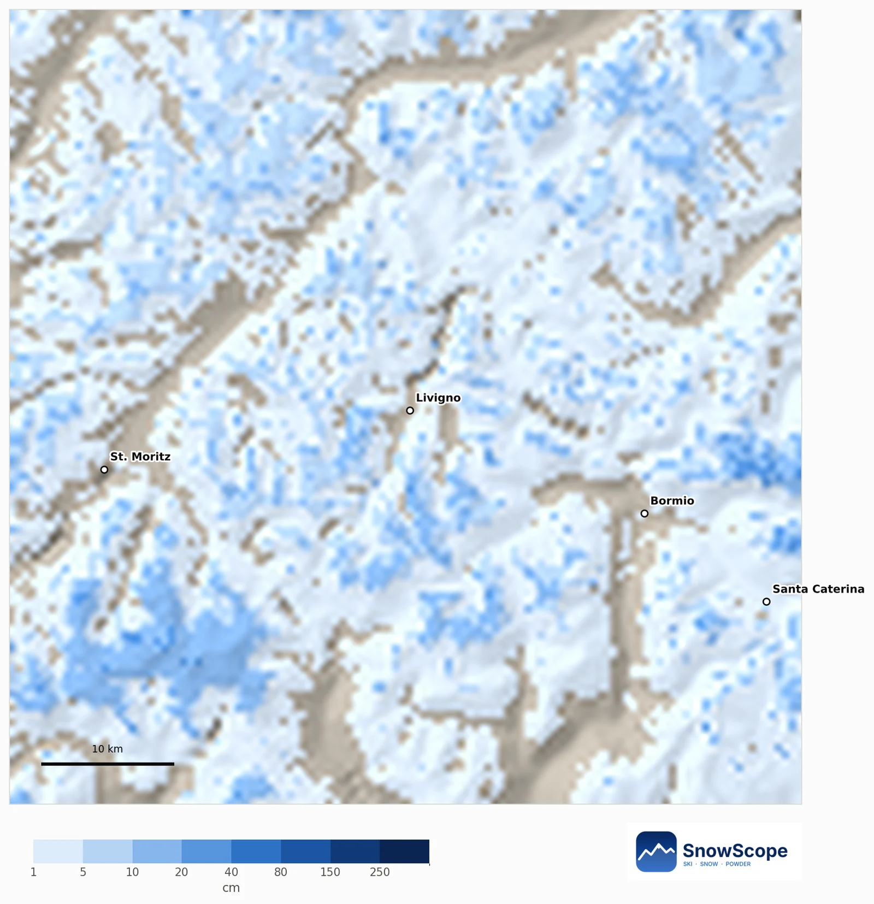
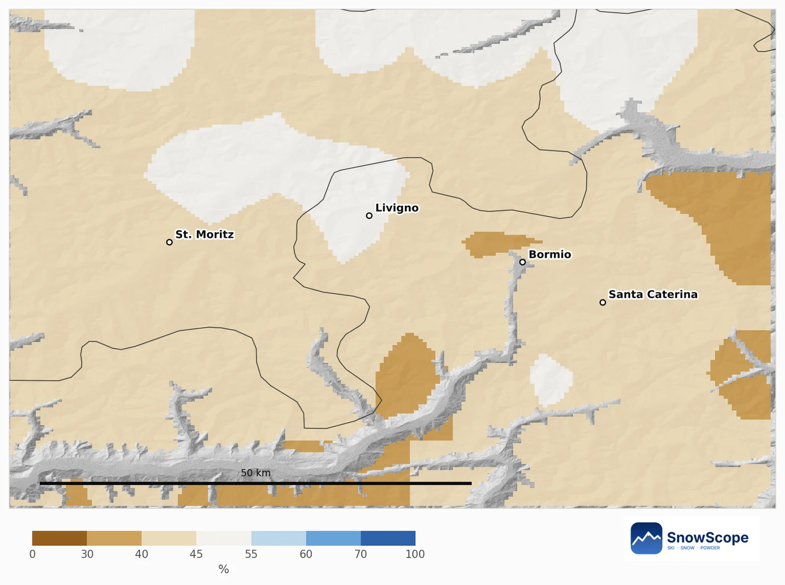
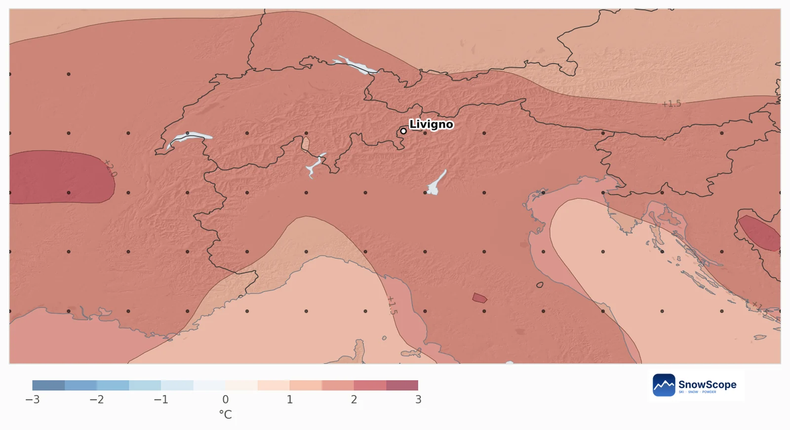
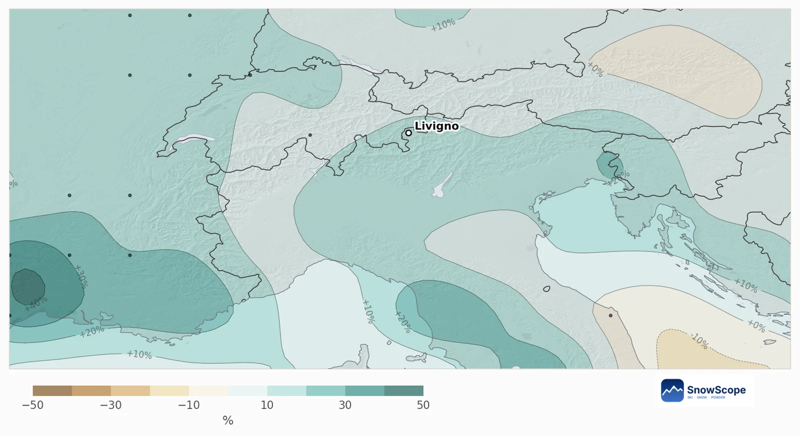
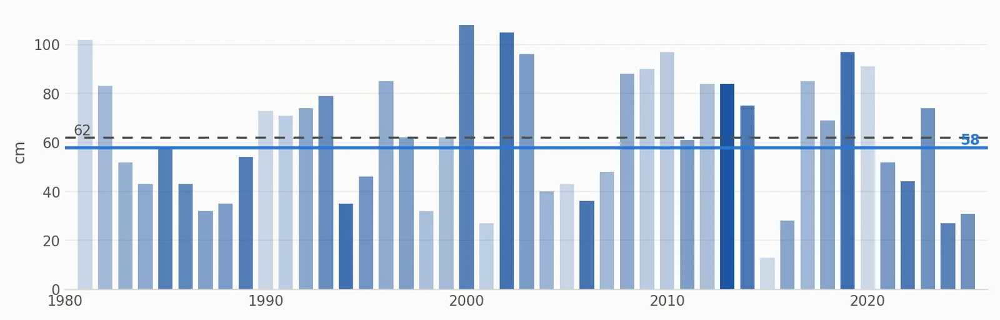

Livigno en décembre 2026 : 100 % de chances d'un Noël blanc, le pari le plus sûr de notre sélection italienne
Le chiffre à retenir : 100 %. C'est la probabilité d'un Noël blanc à mi-pente à Livigno, car lors de chacun des 45 derniers hivers il y avait au moins 5 cm de neige le 25 décembre. Décembre 2026 s'annonce plus doux et plus humide que d'habitude ; à cette altitude, cela compte à peine.
Consultez les prévisions neige en temps réel pour Livigno sur l'application SnowScopeHauteurs de neige, alertes poudreuse et carte 3D, gratuitement.
Aujourd'hui, en chiffres
Mi-pente (2301 m) : 4 cm. Sommet (2791 m) : 4 cm. Bas du domaine (1811 m) : sans neige, pour l'instant. Vu d'en haut, 83 % des 60 km autour de Livigno sont blancs. Les sept prochains jours pourraient ajouter environ 15 cm à mi-pente et 23 cm au sommet.
Plus de neige que d'habitude, ou moins ?
Pas de signal fort sur la plupart de la zone : autour de Livigno, Bormio et l'Engadine, 80 % de la montagne ne penche dans aucun sens, 20 % penche vers moins de neige, et aucun secteur ne penche vers plus.
À mi-pente, nous donnons 43 % de chances d'avoir plus de neige fraîche qu'un décembre habituel. Habituel : 36 cm ; tendance : 32 cm. Le 31 décembre, il y a d'habitude 62 cm au sol ; la tendance est de 58 cm, le plus probablement entre 41 et 83 cm. Ce sont des probabilités, pas des promesses.

La prévision européenne, en bref
Ensemble, les 51 calculs placent décembre 1,6 °C au-dessus de la normale sur la zone, et 80 % d'entre eux sont plus chauds. Les précipitations ressortent 13 % au-dessus d'un décembre habituel de 57 mm, avec 59 % des calculs du côté humide. La douceur est souvent une mauvaise nouvelle pour la neige, mais peu ici : à l'altitude de Livigno, les précipitations en plus tombent encore en neige, et le lien entre douceur et manque de neige est faible (corrélation -0,26).


Les chances pour Noël
La mi-pente était blanche le jour de Noël lors des 45 hivers passés. En pondérant ces hivers par la prévision, on obtient toujours 100 %. Un 25 décembre habituel y compte 57 cm de neige ; la tendance annonce 54 cm. Les décembres passés les plus proches de cette prévision : 2013, 2019 et 1994.

Conseils aux skieurs
- La neige à Noël est votre priorité ? Dans notre sélection italienne, l'altitude de Livigno est le pari le plus sûr.
- Skiez au-dessus de la mi-pente pour la meilleure neige ; début décembre, le bas peut rester mince.
- Avant de passer les cols, consultez la prévision à 7 jours et la carte SnowScope pour la prochaine perturbation.
Références et crédits
- ECMWF SEAS5 seasonal forecasts, Copernicus Climate Change Service (C3S) cds.climate.copernicus.eu/datasets/seasonal-postprocessed-single-levels
- ERA5 monthly averaged data, Copernicus Climate Change Service (C3S) cds.climate.copernicus.eu/datasets/reanalysis-era5-single-levels-monthly-means
À propos de ces chiffres
Méthode. Température et précipitations : la prévision saisonnière du centre météo européen (ECMWF SEAS5, 51 calculs lancés le 1er novembre 2026, écarts par rapport à ses propres reprévisions 1993-2016, grille d'environ 100 km). Neige : pour chaque maille de montagne d'environ 10 km, nous prenons notre modèle du passé (46 hivers, hauteur de neige corrigée de l'altitude) et la météo de chaque décembre de 1981 à 2025 (ERA5) ; les décembres passés dont la température et les précipitations ressemblent à chaque calcul comptent davantage, et leur neige donne les probabilités. Neige du jour : la carte de neige SnowScope (500 m). Une tendance mensuelle ne fait que déplacer les chances : elle ne prévoit ni une tempête ni une date.
Citer ce bulletin
Pour la recherche, l'enseignement ou la presse : chiffres et graphiques réutilisables librement sous CC BY 4.0 avec cette citation.
SnowScope (2026), Livigno en décembre 2026 : 100 % de chances d'un Noël blanc, le pari le plus sûr de notre sélection italienne, https://snowscope.app/blog/fr/2026/11/livigno-december-2026-snow-outlook.html, consulté le 2026-11-10
SnowScope (Atlas Labs). (2026, November 10). Livigno en décembre 2026 : 100 % de chances d'un Noël blanc, le pari le plus sûr de notre sélection italienne. SnowScope snow reports. https://snowscope.app/blog/fr/2026/11/livigno-december-2026-snow-outlook.html
BibTeX
@misc{snowscope2026livignodecember2026snowo,
author = {{SnowScope (Atlas Labs)}},
title = {Livigno en décembre 2026 : 100 % de chances d'un Noël blanc, le pari le plus sûr de notre sélection italienne},
year = {2026},
month = nov,
howpublished = {\url{https://snowscope.app/blog/fr/2026/11/livigno-december-2026-snow-outlook.html}},
note = {Published 2026-11-10 12:19 UTC; accessed 2026-11-10}
}· CC BY 4.0 · Méthodes, données et outils →
Suivre Livigno
Gratuit : un message quand la neige arrive, et la météo chaque matin.
Autres bulletins neige

Le Sella Ronda depuis Sëlva dans le Val Gardena : cols de Gardena, Campolongo, Pordoi et Sella dans l'ordre, avec notre historique de neige de 46 hivers passés.

Chantarella, Marguns, Piz Nair, White Turf : les mots qu'on entend à St-Moritz, expliqués, et ce que 46 hivers passés de notre historique de neige disent de chaque altitude de la Corviglia.

Dix points pratiques pour un séjour de ski à Livigno : les routes, le froid, les boutiques détaxées, les deux versants et le meilleur moment pour la neige, d'après 46 hivers passés.